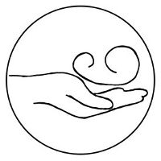

-
Lena Heidenreich
Heilpraktikerin
An dieser Stelle möchte ich mich kurz vorstellen: Ich bin 1989 geboren und im Harzvorland aufgewachsen. Aktuell lebe ich in Hamburg, bin verheiratet und habe seit 2014 eine Tochter. Ich häkele und stricke leidenschaftlich gerne. In Zukunft möchte ich mich intensiver mit Kinderosteopathie und Ernährungswissenschaften beschäftigen.
-

2009-2014
Vollzeitausbildung am ECOM
Meine Ausbildung in Osteopathie habe ich als 5-jährige Vollzeitausbildung am European College of Osteopathic Medicine (ECOM) absolviert. Während der 5 Jahre habe ich nicht nur viel Zeit gehabt mich mit der Philosophie der Osteopathie auseinander zu setzen, sondern auch sehr viele verschiedene Möglichkeiten der Untersuchung und Behandlung erlernt. So kann ich für Ihre individuellen Probleme auch ein individuelles Behandlungskonzept zusammen stellen.
-

November 2014
Heilpraktikerprüfung
Meine Heilpraktikerprüfung habe ich erfolgreich am 26.11.2014 bei der Behörde für Gesundheit und Verbraucherschutz in Hamburg abgeschlossen.
-

Februar 2015
Mitglied im VOD
Ich bin im Verband der Osteopathen Deutschland e.V. (VOD). Dies ist der älteste und größte Berufsverband für Osteopathen. Die Mitgliedschaft versichert Ihnen als Patient, dass ich eine qualifizierte Ausbildung genossen habe und regelmäßig an Fortbildungen teilnehme.
-

September 2015
Kinderosteopathie
Die osteopathische Arbeit mit Schwangeren, Säuglingen und Kindern finde ich besonders interessant. Während der Ausbildung wurde ich im 10. Semester in Kinderosteopathie unterrichtet. Um diese Fähigkeiten noch weiter auszubauen, habe ich im September 2015 eine 2-jährige Weiterbildung in Kinderosteopathie begonnen.
-
Heute